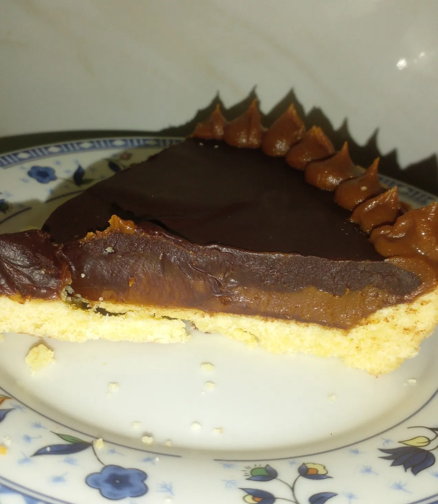

Guisados
guiso de lentejas tradicional :

- 200 gr. de lentejas pardinas .
- 120 gr. de chorizo fresco .
- 1 zanahoria .
- 1 cebolla mediana .
- 2 dientes de ajo .
- Aceite de oliva o Aceite de girasol .
- Pimentón y especias a gusto .
- 1 litro de agua .
- 1 hoja de laurel .
- Sal a gusto .
- Dejar las lentejas en remojo.
- Picar los ajos, que queden chiquitos, y luego verterlos en la cacerola .
- Picar la cebolla.
- Pelar la zanahoria y luego cortarla para que queden pedacitos pequeños.
- Poner una cacerola en la ornalla, a fuego medio.
- Poner aceite en la cacerola.
- Dentro de la cacerola, insertar el ajo y la cebolla.
- Luego, ingresar la zanahoria .
- Cortar el chorizo y luego insertarlo para que la preparación vaya tomando gusto.
- Introducir el pimentón y las especias a gusto. Luego, revolver.
- Introducir las lentejas y rehogarlas unos minutos.
- Mezclar agua para hervir las lentejas e ir controlando la cocción. En caso de que falte agua, agregarle más.
- Tapar la cacerola para que se conserve el calor y se puedan hervir las lentejas.
- Luego de 20 o 30 minutos, retirar la cacerola del fuego .
- ¡Listo! Ya podés comer un delicioso guiso de lentejas .
Locro Criollo :

- 250g. de porotos blancos.
- 250g. de maíz blanco partido.
- 1 chorizo colorado.
- 1 chorizo criollo.
- Cuerito de cerdo.
- Pechito de cerdo.
- Falda.
- 200g. de panceta.
- 3 cebollas.
- 2 cebollas de verdeo.
- 1 puerro .
- 1/2 calabaza.
- 1/2 morrón rojo (para la salsita).
- Condimentos: sal, pimienta, comino, pimentón, ají molido, orégano.
- Con un dia de anterioridad picar en vastones finos las verduras y poner en agua junto con el maiz y los porotos.
- Cortar la carne en cubos .
- Hervir el choriso criello y el colorado en dos ollas distintas alrededor de 15 min. para degasar.
- En una olla caliente colocar la panceta para que largue su grasa, luego agregar la cebolla de verdeo, el puerro, sal, aceite de oliva y saltear todo.
- Una vez blandito agregar el chorizo colorado, los cueritos de cerdos, el chorizo, el maíz pisado blanco y los porotos blancos (ambos bien escurridos previamente) y agregar agua (la cual no tiene que ser en las que estaban las verduras).
- Tapar y dejar cocinar 1 hora y media en olla común.
- A la olla con todos los ingredientes agregarle la calabaza cortada en cubos, el pechito, la falda, los condimentos, un poco más de agua y revolver bien. Dejar nuevamente 1/2 hora en olla a presión o una hora y media mas en olla común.
- En otra olla ,agregar picado el morrón, 1 cebolla de verdeo y 1 cebolla común bien bien finitos. Agregar ají molido (bastante si la queres más picante), pimentón y orégano. Cocinar a fuego bajo en bastante aceite de oliva hasta que esté bien blandita la cebolla.
- Servir con la salsa encima y la parte verde de la cebolla de verdeo picada.
Opciones veganas :
Fideos de arroz con salteado de tofu y pimiento:

- Fideos de arroz 120 g.
- Tofu firme 200 g .
- Pimiento rojo 1 .
- Jengibre fresco trocito 1.
- Salsa de soja 15 ml .
- Curry molido media cucharadita .
- Ajo granulado cuarto de cucharadita.
- Cúrcuma molida una cucharadita.
- Lima 1.
- Pimienta negra molida .
- Sal .
- Aceite de oliva virgen extra .
- Perejil fresco o cilantro.
- Desechar el líquido del tofu y escurrir bien.
- Envolver en varias capas de papel de cocina y dejar como mínimo 15 minutos con un peso encima.
- Cortar en cubos del tamaño de un bocado.
- Calentar un poco de aceite en una sartén y dorar el tofu por todos lados.
- Cocer los fideos de arroz en agua hirviendo con un poco de sal durante unos tres minutos , siguiendo las instrucciones del paquete.
- Escurrir y enjuagar con agua fría, soltándolos un poco con un tenedor. Reservar.
- Rallar o picar fino el jengibre.
- Cortar el pimiento en tiras finas.
- Saltear en la misma sartén a fuego alto ambos ingredientes durante dos minutos.
- Salpimentar, agregar la salsa de soja y las especias.
- Rehogar 5 minutos. Devolver el tofu, dar unas vueltas e incorporar los fideos.
- Mezclar todo bien hasta que se integren.
- Servir con perejil picado.
Ensalada de quinoa, calabaza asada y granada :

- 300 g de calabaza.
- 1 cebolla morada.
- 75 ml de aceite de oliva virgen extra.
- 200 g de quinoa.
- 30 g de mezcla de semillas.
- cilantro fresco al gusto.
- menta fresca al gusto.
- 1 granada.
- 20 ml de zumo de limón .
- Comenzaremos precalentando el horno a 220 grados.
- Cortamos la calabaza pelada en dados y la cebolla morada en láminas y las asamos con un poco de sal y una cucharada de aceite de oliva durante 20 minutos.
- Por otra parte lavamos la quinoa y la cocemos en agua hirviendo con sal, durante 10 a 15 minutos.
- La escurrimos y la dejamos drenar totalmente.
- Combinamos el resto de ingredientes en un bol.
- Añadimos la quinoa, la calabaza asada y la cebolla, y removemos.
- Sazonamos y servimos con las hierbas picadas por encima.
Recetas sin tacc
Pizza sin tacc casera:

- 300g de premezcla sin tacc (o 150 g de harina de arroz, 75 g de fécula de mandioca, 75 g de almidón de maíz).
- 1 cdita. de goma xántica o 2 cdas. de psyllium husk.
- 1 cdita. de sal.
- 1 cdita. de azúcar.
- 7 g de levadura seca (o 20g de fresca).
- 200 ml de agua tibia.
- 2 cdas. de aceite de oliva.
- 1 taza de salsa de tomate.
- 200g de queso fresco o muzzarella y toppings a gusto.
- Precalentar el horno a 220-240°c .
- Disolver la levadura y el azúcar en el agua tibia. Dejar reposar hasta que se forme una espuma (5-10 min).
- En un recipiente, mezclar la premezcla sin tacc, la sal y la goma xántica.
- Agregar la levadura activada y el aceite. Mezclar bien hasta formar una masa pegajosa y amasar un poco con las manos hasta que se forme un bollo.
- Tapar y dejar levar en un lugar tibio hasta que duplique volumen (alrededor de 40 minutos).
- Estirar sobre una placa aceitada o con papel manteca, con cuidado (la masa es más blanda que una masa común).
- Cubrir con un poco de salsa de tomate y prehornear unos 6-8 minutos en horno fuerte.
- Luego agregar un poco más de salsa, el queso o muzzarella y los toppings elegidos, terminar de hornear hasta dorar.
Croquetas de arroz yamaní orgánico con vegetales de estación y sin gluten :
- 1¼ taza arroz yamaní orgánico ya cocido (en paso 1 y 2 explico cómo lo preparo yo actualmente) .
- 1 cebolla chica .
- 1 pedacito morrón rojo .
- 1 zanahoria chica .
- 1 diente ajo (opcional ).
- Al gusto sal y especias .
- 4 cdas levadura nutricional monoingrediente o de queso rallado .
- 3 huevos grandes .
- 1 cda ajo y perejil picado .
- C/n harina de alguna legumbre, como por ejemplo de garbanzos .
- 1 cdta polvo de hornear (opcional) .
- C/n aceite de oliva virgen extra .
- Lavo el arroz. Lo remojo por 24 horas, cambiando el agua varias veces.
- Enjuago y hiervo en abundante agua nueva. Al hervir, agrego unos granitos de sal gruesa. Una vez tierno, cuelo, dejo atemperar y luego refrigero.
- Pelar y picar (chiquitito porque va todo crudo) la cebolla, ajo y morrón. Pelar y rallar fino la zanahoria.
- En un bol, agregar los huevos y condimentar. Usé sal marina, pimienta negra y cúrcuma molidas. Batir un poco y agregar a los vegetales junto al arroz.
- Agregar la levadura nutricional o queso, luego la harina, de a poco, y opcionalmente el polvo de hornear. Dejar reposar una media hora. Si hace calor, en la heladera.
- En una sartén colocar un poco de aceite. Cuando esté caliente, agregar montoncitos de masa. Una vez firmes los bordes, dar vuelta con cuidado.
- Retirar y colocar sobre papel de cocina. Salieron 12 de tamaño interesante.
Recetas de postres
Torta Invertida de Manzana SIN TACC:

- 170 gr azúcar para el caramelos .
- 100 gr azúcar .
- 100 gr almidón de maíz .
- 1 cucharadita polvo de hornear .
- 3 huevos .
- cantidad necesaria Esencia de vainilla . >
- En el molde de la torta hacer el caramelo para la torta con los 170 gr de azúcar y un chorrito de agua. Hasta que agarre un color caramelo. Una vez listo agregar las manzanas cortadas en gajos de dejar reposar.
- En un bol batir las 3 claras hasta hacer un merengue y de acopo agregar el azúcar (100 gr).
- Luego agregar de a una las yemas y seguir batiendo y en la última yema agregar la esencia de vainilla.
- Luego una vez unificado agregar la fécula de maíz con el polvo de hornear tamizado en forma envolvente con una espátula. Hasta unir todo. Luego volcar las preparación al mode y llevar al horno precalentado a 180° por 30 minutos.
- Luego de los 30 minutos pinchar para ver si está cocido y sacar del horno.
Tarta toffe :

- 100 gr manteca pomada.
- 100 gr azúcar.
- 1 huevo.
- 200 gr harina 0000.
- 1 cucharadita polvo para hornear.
- 1 pizca sal fina.
- Esencia ó ralladura de medio limón.
- 200 gr dulce de leche repostero.
- 100 gr crema de leche.
- 200 gr chocolate semiamargo águila picado.
- En un bowl batí la manteca con el azúcar hasta lograr una crema, luego agregá la ralladura ó esencia y por ultimo el huevo.
- Ahora vas a agregar la harina, el polvo para hornear y la pizca de sal fina. Uní todo con una espátula ó cuchara, se va a formar una masa super blanda NO LE AGREGUES MAS HARINA NI AMASES.
- En la mesada vas a extender papel film de modo que puedas volcar la masa allí. Envolvela con el film y llevala a la heladera por 1 hora.
- Mientras enmantecá y enharina el molde y encendé el horno al mínimo. Pasada la hora retirá la masa de la heladera, abrí el papel con cuidado, volvé a extenderlo esparcí un poco de harina y con un palote estirá la masa. Tratá de darle forma circular para que cubra el molde.
- Ayudate con el palote envolviendo la masa y llevandola al molde. Fonzá (acomodá bien la masa en el molde) una vez listo pinchá toda la base con un tenedor. Y ahora al horno medio bajo por 30 minutos ó hasta que veas dorados los bordes.
- Una vez lista, dejala entibiar por lo menos 30 minutos, y ahí vas a rellenarla con el dulce de leche. Y otra vez a la heladera otros 30 minutos a enfriar.
- Unos 15 minutos antes de sacarla de la heladera haremos la ganache ó cobertura a baño maría: poné agua en una olla a calentar. Apagá el fuego y en un bowl de metal ó apto para el calor vas a verter la crema de leche y el chocolate picado, llevá el bol a la olla con agua caliente dejá un minuto y comenzá a revolver hasta que veas disuelto el chocolate. Ahora vas a cubrir la tarta con la ganache y llevar directo a la heladera a enfriar. Y listo, ya podés disfrutarla